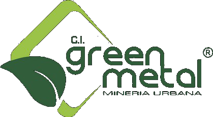

Campuslands Full Service · Software House
Digitalización de la
Logística de Salida y Calidad
Módulo FySwap · Trazabilidad de despacho · QA/QC · Aduana e integraciones
PARA

Propuesta de Alcance y Estimación Técnica